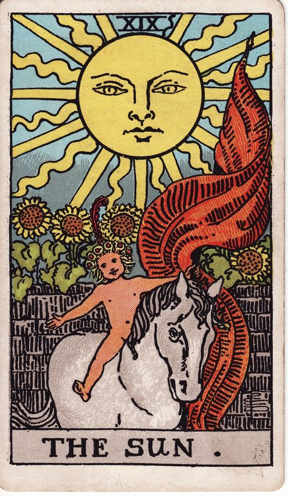
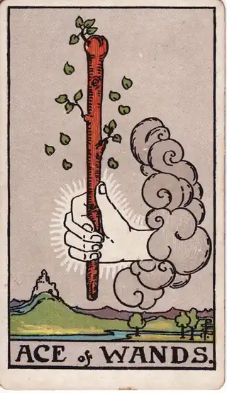

READING
朝1分のタロット1枚引きで、今日のテーマを決める
・ DECIDE. 編集部

朝、目覚ましを止めた瞬間から、頭の中はもう騒がしくなっています。返信していないメール、今日中に終わらせたい仕事、昨夜決めきれなかった小さな用事。「今日、どの仕事から片付けるべきか」「あの返信はどう書こうか」。やりたいことはあるのに、何から手をつければいいか分からないまま、気づけば午前中が終わっている。そんな朝を過ごしていませんか。
先に言っておくと、この記事のゴールは、朝のタスク管理を完璧にすることではありません。ゴールは、出勤前や家事の合間のわずか1分で、「今日という1日を、どんなテーマで過ごすか」をひとつだけ決めることです。テーマが決まった朝は、驚くほど静かに始まります。
POINT 01 「やること」ではなく「在り方」を決める
ToDoリストは、「やるべき作業」のリストです。けれど、朝の迷いの正体は、作業の量そのものではありません。「今日は攻める日なのか、整える日なのか」「人と向き合う日なのか、ひとつの作業に没頭する日なのか」。その日のスタンスが決まっていないから、ひとつひとつの小さな選択にいちいち迷ってしまうのです。
朝のタロット1枚引きは、このスタンスを決めるためのスイッチです。運勢を当てるためではありません。「今日の自分に必要な視点は？」と問いかけて1枚を引き、出たカードのキーワードを、今日の自分の行動指針として1行に変換する。それだけの作業です。
やり方はシンプルです。まず心の中で問いかける。次に、直感で1枚引く。最後に、出たキーワードを今日の行動に紐づける。たとえば、バランスを大切にするカードが出たら「今日は詰め込まず、腹八分目で切り上げる日」。前に進む力を示すカードが出たら「迷っていた提案を、今日一気に進める日」。抽象的な言葉を、今日の自分の言葉に翻訳するのがコツです。
朝であることにも意味があります。夜は一日の出来事を引きずり、感情が膨らみやすい時間帯です。テーマ決めには向きません。頭がまだ静かで、今日の予定が動き出す前の朝だからこそ、一日の基準をすっと置くことができます。
テーマがひとつ決まると、日中の判断に「ものさし」が生まれます。突発的な依頼が来ても、「今日は整える日だから、急ぎでなければ丁重に後日に回そう」と即座に判断できる。決断のたびに立ち止まる時間が減るのは、一日の始まりに基準を置いたからです。一日の選択の多さに疲れてしまう感覚については、決断疲れで決められなくなる理由と回復のしかたでも整理しています。
POINT 02 カードの視点で見る
太陽は、大きな太陽の下、白馬に乗る子どもの姿です。「明快さ」「肯定」「素直さ」を表します。このカードが出た朝は、考えすぎずに済む日です。難しく構えず、目の前のことを明るい気持ちで進める。その単純さが、今日のテーマになります。

ワンドのエースは、雲の中から差し出された、芽吹く杖の姿です。「始める力」「最初の一歩」「情熱の芽」を表します。ずっと気になっていたのに手をつけられなかったことがあるなら、それを今日の最初の一件にする合図です。大きな計画ではなく、最初の一歩だけを決めます。

魔術師は、天と地を指さし、机の上にあらゆる道具を並べた人物です。「手持ちの材料で始める」「自分で決める力」を表します。足りないものを数えるより、今あるもので何ができるか。このカードが出た朝は、準備不足を言い訳にしない日です。
POINT 03 引きっぱなしにしない。「記録」が朝の1分を資産にする
ただし、1枚引いて「なるほど」と思うだけでは、テーマは昼前には消えてしまいます。朝の1枚引きを本当に効かせるのは、記録のひと手間です。引いたカードと、そこから決めた今日のテーマを、決断ログに1行だけ残す。「太陽。今日は素直に、抱え込まずに進める」といった具合です。
記録が残ると、夜の振り返りが可能になります。テーマどおりに過ごせた日と、流されてしまった日。テーマと結果を並べて見返すうちに、自分のパターンが見えてきます。「月曜はテーマを軽くしたほうが回る」「人と会う日に集中作業のテーマを置くと崩れる」。この気づきは、引いて終わりの習慣からは得られません。
さらに、記録の蓄積は翌日以降の朝にも効きます。昨日の自分が何をテーマに置き、どう過ごしたかが見えるから、今日の1枚を引くときの問いの精度が上がる。朝の1分は、点ではなく線になります。引く、決める、残す、見返す。この小さな循環を回す場所としてアプリを使う必然性は、ここにあります。
続けるコツは、ハードルを下げることです。引くのは1枚だけ、記録は1行だけ。コーヒーを淹れる合間に置ける長さだからこそ、忙しい朝でも途切れません。丁寧な振り返りは要りません。1行でも残っていれば、その日の朝に自分のテーマと向き合った証拠になります。
POINT 04 自分への問いかけ
明日の朝、目覚めたら自分に問いかけてみてください。今日いちばん大切にしたいのは、前に進むことか、整えることか、人と向き合うことか。その答えを一言で言うなら、何か。テーマを決めた自分は、夜にどんな気持ちで一日を終えていそうか。
大きな決断も、結局は毎日の小さな選択の積み重ねです。流されるままに始まる朝を、自分のテーマで始まる朝に変える。そのための静かな1分を、明日の朝に置いてみてください。